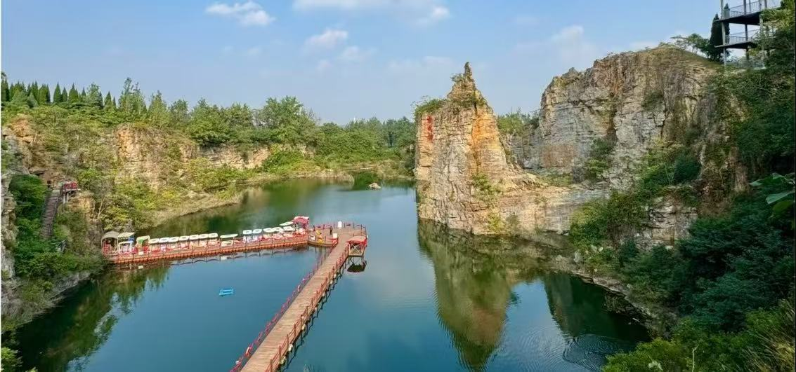
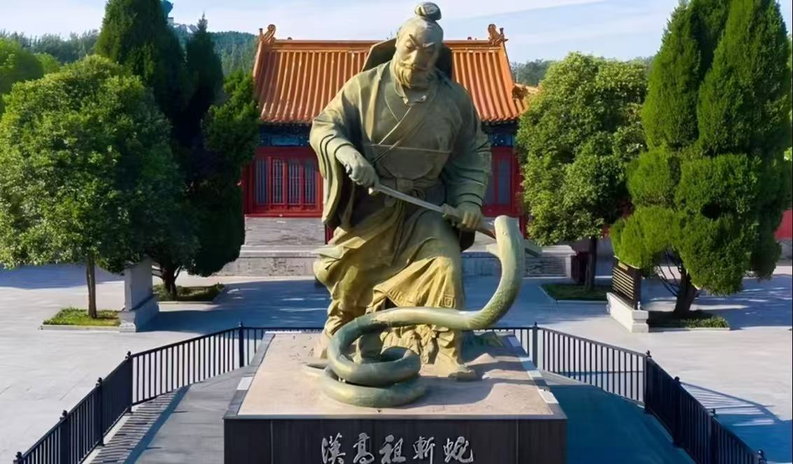

芒砀山汉文化旅游景区位于河南省商丘市永城市芒山镇，是豫东地区唯一的国家5A级旅游景区，也是全国重点文物保护单位、国家级汉文化研学基地。景区因汉高祖刘邦在此斩蛇起义、奠定大汉基业而闻名，坐拥规模宏大的西汉梁王墓群，是探寻两汉历史文化的核心胜地。
景区集历史文物、山水风光、民俗文化、研学教育于一体，出土了四神云气图、金缕玉衣、梁孝王墓等众多国宝级文物，人文底蕴深厚，历史遗迹遍布，兼具观光游览、文化研学、祈福朝圣等多重游玩价值，是感受大汉雄风、追溯华夏历史的必游之地。

📍 地址：河南省商丘市永城市芒山镇芒砀山汉文化旅游景区
🎫 门票：景区实行联票制，涵盖各大核心景点；学生凭学生证半价，60岁以上老人、1.4米以下儿童、现役军人、残疾人等凭有效证件免门票
⏰ 开放时间
旺季（4月—10月）08:00-18:00，淡季（11月—3月）08:30-17:30，全年正常开放
🚗 交通指南
🍜 当地特色美食
经典一日游：景区入口 → 汉梁王陵景区 → 梁共王墓 → 刘邦斩蛇处 → 大汉雄风景区 → 返程。
文化深度游：Day1 游览梁王墓群、地质公园；Day2 陈胜园、民俗文化体验，全方位感受汉文化魅力。
1. 景区为历史文化遗址，参观时保持安静，文明游览，不触摸文物遗迹。
2. 墓葬展厅内光线较暗，拍照时禁止使用闪光灯，保护文物。
3. 景区徒步路段较多，建议穿着舒适平底鞋，方便长时间行走。
4. 建议聘请讲解员或使用电子导览，深入了解汉代历史与文物故事。
5. 尊重历史文化，不随意刻画、不乱扔垃圾，保护文物遗迹。
6. 节假日人流量较大，建议提前线上预约购票，错峰出行提升体验。
春季气候温和，草木萌发，适合户外徒步与文化研学；夏季绿意盎然，景区阴凉舒适，避暑观光两不误；秋季天高气爽，景色宜人，是拍摄历史遗迹的最佳时节；冬季静谧清幽，游客较少，可静心感受千年汉文化底蕴。